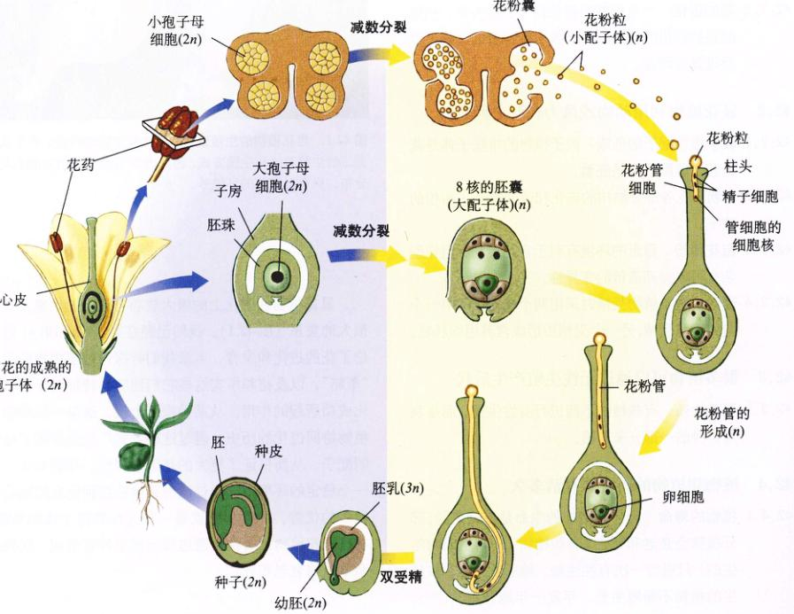
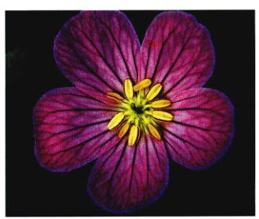
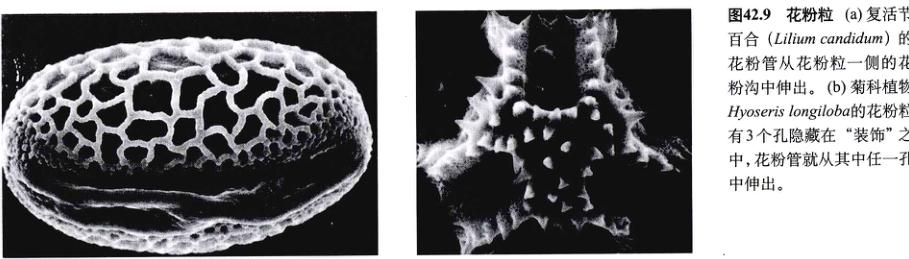
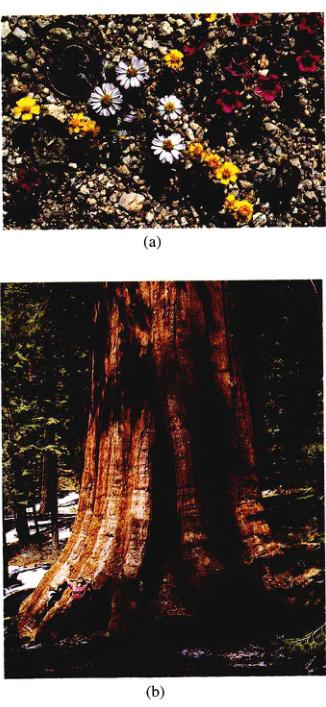
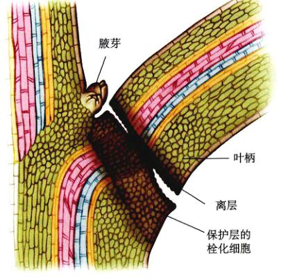

图 42.1 显花植物的生殖进化 植物和动物协同进化产生独一无二的生殖系统和生殖方式，因此近25万种显花植物在全球分布，只有最荒芜的环境外。
显花植物在进化上的极大成功与它们的生殖方式有很大的关系（图 42.1）。我们已经在第37章和第41章讨论了花的进化和发育，本章我们将探讨被子植物的生殖“策略”，以及花和果实这些它们独有的特征对它们进化成功所起的作用。从某种程度上说，这是一段动物与植物协同进化的历史，通过这种方式广泛地传播了植物的配子，从而保证了更大的基因多样性。尽管如此，在一个稳定的环境中，通过遗传维持某种已有的地位有很多的优势。无性生殖就是一种无性繁殖个体的策略。有些显花植物的有性生殖过程出现了异常变化，结果是亲本植物衰老和死亡。
我们日常所见的大多数植物都是被子植物。世界上大约有25万种显花植物，它们的大小从小微小的草本植物到巨大的桉树 (Eucalyptus)，它们的形状也各不相同，从仙人掌、禾本科植物、雏菊，到水生的眼子菜。大多数的灌木和乔木（除了松柏类的植物和银杏属的植物）都属于这一门。由于它们在进化上的巨大成功以及它们对人类的很多用途，本章将重点讨论被子植物的生殖策略（图 42.2）。实际上，我们所食用的所有食物都直接的或间接的来自显花植物，而我们所消耗能量的90%仅仅来自大约100种植物。被子植物还是药物、衣料及建筑材料的来源。虽然其他门的植物也提供很多资源，但被子植物在数量上是其他植物的7倍。例如，现存的裸子植物大约只有750种。
当显花植物出现的时候，非洲和南美洲还彼此连接在一起，同时它们还与南极洲和印度相连，并通过南极洲与澳大利亚和新西兰相连（图 42.3）。这一大片陆地构成了一块著名的古大陆，这就是冈瓦纳大陆 (Gondwanaland)。在北半球，欧亚大陆是和北美连在一起的，这形成了另一块超级大陆，即劳亚古大陆 (Laurasia)。由南美和非洲组成的那块巨大的陆地刚好在赤道以南，因此，在它的内部很有可能有一个以高温和干旱为特征的气候区。在今天，主要大陆的内部也都存在相似的气候。在冈瓦纳大陆内部，一些干燥而不适于生存的生境中进化产生了很多早期的被子植物。这些显花植物在这种干旱或半干旱的环境下生存了下来，这与它们的许多
图 42.2 被子植物的生活史 卵细胞在胚囊中形成，胚囊在胚珠中，而胚珠由心皮包裹着。同时，花粉粒在花药的孢子囊中形成，然后被释放出去。受精包括两个过程：一个精子和卵细胞结合形成了受精卵；同时另一个精子与极核融合并形成胚乳。胚乳是被子植物特有的一种组织，它为胚和幼苗提供营养。
图 42.3 1.3亿年前被子植物刚刚出现在化石记录中时各主要大陆的分布情况 非洲、马达加斯加岛、南美洲、印度、澳大利亚和南极洲是连在一起的，都是冈瓦纳大陆的一部分。这片大陆最后分裂成为相互独立的现存大陆。
特征是相互关联的。
这种机制在不同植株的花之间传递花粉，甚至有时花与花之间要间隔相当远的距离，但它确保了异型杂交 (outcrossing)（在不同个体之间交叉传粉），这对早期的被子植物能够成功地存活下来有很重要的意义。被子植物类群逐渐进化出了各种有效的果实散播方式，这对于被子植物的分布具有深远的影响（见第40章）。有一些被子植物的生活史很短，拟南芥 (Arabidopsis) 从种子发育到成熟的显花植物只需要24天，这也是被子植物成功的一个因素。无性生殖产生了很多有竞争优势的人侵种。木质部的导管和其他一些解剖学和形态学上的特征也与被子植物的成功有关。随着早期被子植物的进化，所有这些对被子植物有利的特征就得以进一步的进化和发展，同时也加速了它们多样化的进程。
大约8 000万到9 000万年前，也就是白垩纪的后半期，在温带和热带的植物种群中，被子植物 (angiosperm) 开始占据优势。通过研究在同一地点出土，形成时间相同的化石，我们可以得到不同种类的植物的相对丰度。在8 000多万年前的岩层中，最常见的植物门类不是被子植物，而包括了石松、桫椤（木蕨）、蕨类植物及裸子植物等。在较短时期内，被子植物就在温带和热带的陆生植物种群中出现了。
被子植物开始大量出现在化石记录中的时候，一些现存植物类的叶、花和果实等也开始出现了。如木兰、山毛榉和豆科的代表种类，和至红 (Cretaceous Peroid) 晚期（6500万年前）就存在了，至今还依然繁盛地存活着。
随着被子植物的兴起，许多昆虫，尤其是那些与花有关联的昆虫，例如鳞翅目（蝴蝶和蛾）和双翅目（苍蝇）昆虫开始出现，并且日益繁盛。很明显，在彼此的进化模式中，植物和昆虫扮演了一个非常重要的角色，而且它们之间的相互作用是最重要的。其他动物，如鸟和哺乳动物，也协助传粉和种子的传播。
在被子植物的传粉过程中，花粉粒和胚珠并不直接接触。花粉在花药中发育成熟，然后经常是通过昆虫、鸟或其他动物运送到另一朵花的花柱头上。当花粉粒到达柱头时，它开始萌发，一条花粉管 (pollen tube) 开始向下生长，这条管子把精子核运送至胚囊。当双受精过程完成之后，胚和胚乳的发育就开始了。种子在成熟的果实中发育完全。种子的发育，又开始了另一段生活史。
许多被子植物传粉过程能否成功，关键在于它能否定期地吸引各种传粉者 (pollinators)——如昆虫、鸟和其他一些动物——在同种的不同植株之间传送花粉。当动物传播花粉时，它们是为自己寻找配偶。它们对这项工作非常积极，其实它们也是在为显花植物寻找配偶。植物和它们的传粉者之间的关系是如此之深，如果它们中间任何一方发生变异可能使这个生殖过程不能完成。如果植物在一个“错误”的时间开花，即开花的时间变化了，可能就没有传粉者进行传粉。如果花或者它们的传粉者的形态发生了变化，它们可能会因为身体形状大小的障碍而不能完成传粉。很明显，花的形态与昆虫的形态是协同进化的，结果要比第41章记述的四轮花器官的产生要复杂得多，也更多样化。
在第37章我们重点讲述了被子植物的进化。那么我们应该记得，被子植物的差异部分是由于进化过程中出现了大量的花表现型，因为花的表现型可以提高传粉的效果。人们认为花的所有器官都是由叶进化来的。在早期的被子植物中，这些花器官还保持着叶中常见的螺旋叶序 (spiral phyllotaxy)（即互生叶序）。以后，便开始趋向于截然不同的四轮器官。一朵完全花 (complete flower) 包括四轮（花萼、花冠、雄蕊群和雌蕊群），一朵不完全花 (incomplete flower) 会缺少一轮或多轮（图 42.4）。
图 42.4 被子植物花的结构
不论是在完全花中，还是在不完全花中，花萼 (calyx) 通常构成了最外面的一轮。花萼由扁平的附属物即萼片 (sepal) 构成，它的作用是保护护芽中的花。所有的花瓣构成了花冠 (corolla)，花瓣可以是合生的。花瓣是用来吸引传粉者的。虽然花最外面的这两轮没有生育功能，但它们对生殖过程有着很重要的作用。
雄蕊群 (androecium)（雄蕊群的英文词来自希腊文的“男人的房子”）是一个集合概念，它包括一朵花的所有雄蕊。雄蕊 (stamen) 是一个特化的结构，它可以产生被子植物的小孢子囊。在裸子植物中，其花粉球 (pollen cone) 上也存在着类似的能产生小孢子囊的结构。大多数现存被子植物的雄蕊都有花丝 (filament)，这些花丝一般都是细线状的。在雄蕊的顶端有一个膨大的部分，叫做花药 (anther)，其中的4个小孢子囊非常明显。一些更原始的被子植物上的雄蕊是扁平、叶状的，孢子囊在其上表面或下表面产生。
雌蕊群 (gynoecium)（雌蕊群的英文词来自希腊文 gyne，“女人的” 和 oikos “房子”）也是一个集合概念，它包括一朵花所有的雌性部分。在绝大多数花中，雌蕊群都是惟一的，它一般由一个心皮 (carpel) 或两个甚至更多的合生心皮构成。单纯的心皮构成单雌蕊，合生的心皮构成复雌蕊。我们熟悉的绝大多数花，例如番茄的花和柑橘的花，都是复雌蕊。在其他特化程度低的花中，例如毛茛的花有许多分生的单雌蕊，每个雌蕊都是由一个心皮构成的。胚珠 (ovule)（将来发育成种子）产生于心皮下部膨大的位置，即子房 (ovary) 中。通常子房在顶部逐渐变窄，成为纤细的瓶颈状的花柱 (style)，而花柱的顶端就是接受花粉的部位——柱头 (stigma)。有时，柱头是裂开的，有多少分叉就代表在这个雌蕊中有多少心皮。心皮本质上是内卷的叶，而胚珠就着生在叶片的边缘处。很可能第一个心皮就是纵向内卷的叶片，这些具毛的叶边缘部分直接与果实发育愈合。这卷入的毛相互连结并可以接受花粉。在进化的过程中，各种证据表明这些毛状物变成了柱头，叶片卷入形成的边缘以及心皮边缘相互融合最终导致雌蕊出现了。很多现代显花植物的心皮已经高度特化了，除非把雌蕊切开，否则我们不能区分出不同的心皮。
图 42.5 花特化的趋势 一种野生的老鹳草 (Geranium maculatum)。每朵花的花瓣减少到了5枚，而雄蕊减少到了10枚。
现代显花植物广泛的多样性由两种主要的进化趋势引起。第一，花原来相互分开的不同部分“组合”在了一起，即合生了。第二，花有些部分缺失了或是退化了（图 42.5）。在较高等被子植物中，花每一轮的数目从多到少。在原始被子植物当中，所有花各部分的附属物都采取螺旋式排列。但在进化的过程当中，这些螺旋式构造逐渐演化成了在每一个结构水平上的单螺旋。许多花的中轴逐渐变短，每轮之间相互靠近。在一些进化系列当中，每轮或多轮相互愈合，有时合为管状物。在另外一些种类的显花植物中，不同轮之间也可能相互愈合。同时，有些花可能会缺失某轮，如某些花缺失花冠，某些花缺失花萼，某些花缺失雄蕊或雌蕊，或者缺失这些多组组合的结构。这些改变通常与传粉机制的变化有关，比如对于草来说，风就取代了动物来完成传粉的过程。
虽然花的多样性是与传粉有关的自然选择的结果，但我们需要认识到培育 (人工选择) 对花的多样性也有重要的作用。人类选择一些对人类有实际用途的或花的外形美观的植物，尽管这些特性对于野生种类可能没有一点适应价值。例如玉蜀黍(Maize)(玉米)，人工选择使得它可以提供更多的食物给人类，来满足人类的需要。人类干预植物的生殖过程，使得它们的每一代都可以成功繁衍后代。但是自然环境下面对食草动物时，现代玉米则缺少其祖先具有的相同保护能力，同时二者的果实传播机制也大相径庭 (图 21.13)。花店出售的人工培育的花，具有特化的花瓣，通常都是多倍体。这只是提高了花的经济价值，而不是它们吸引传粉者的能力。只有研究了那些未受人类干预而改变基因型的野生植物之后，才能作出花和传粉动物之间存在共生关系的结论。
图 42.6 兰花的两侧对称 原始的花一般是辐射对称的，而许多高级类群的花，比如兰花的就是两侧对称的。
图 42.7 花不对称性的基因调控 (a) 正常情况下金鱼草的花是两侧对称的。(b) Cycloidia 基因调控花的对称性，一旦 Cycloidia 基因发生突变，金鱼草的花将会变为辐射对称。
花进化过程中的其他趋势已经影响到了花的对称 (symmetry) 模式。原始的花，比如毛茛的花，是辐射对称的 (radially symmetrical)。也就是说，通过花的中心任意画一条线，可将花分成大致相同的两部分。许多高等植物的花是两侧对称的 (bilaterally symmetrical)，也就是说，只有惟一的一个平面可以将花分成相同的两部分。很多花都是这种对称方式，如金鱼草的花、薄荷的花、兰花的花 (图 42.6) 等。在紫罗兰和豌豆属的植物中，这两种侧对称的花也很常见。在这些植物中，这种花通常与一个高度发达的精确的传粉系统相联系。两侧对称已经独立出现许多次了。在金鱼草中，Cycloidia 基因决定花的对称形式，若该基因缺失，花就经常是辐射状对称的 (图 42.7)。因此，如果我们在实验中改变一个基因，那花的形态就会发生极大的改变。同样，类似的功能相似的基因是否会出现在其他植物中呢？这仍是一个问题。
生殖过程能否成功关键在于配子（卵细胞和精子）的结合，在花中胚囊和花粉粒分别是形成雌雄配子的结构。我们在前面已经提到，植物进行有性生殖的生活史中包含着世代交替。世代交替 (alternation of generation) 即二倍体的孢子体世代与单倍体的配子体世代相互交替。被子植物的配子体很小，完全被包裹在亲本孢子体的组织中。雄配子体 (male gametophyte)，又称小配子体 (microgametophyte)，就是花粉粒 (pollen grain)。雌配子体 (female gametophyte)，又称大配子体 (megagametophyte)，就是胚囊 (embryo sac)。花粉粒和胚囊是由被子植物花中不同的特化结构分别产生的。
与动物相似，被子植物有不同的结构来产生雄配子和雄配子 (图 42.8)。但是被子植物的生殖器官与动物的生殖器官有两点不同。首先，在被子植物中，雄性生殖器官和雌性生殖器官一般都位于同一朵花上，当然也有少数例外。第二，被子植物的生殖器官只在一定时间内存在于成熟的个体上。被子植物的花及其生殖器官是随着季节节律不断发育的，一般它们在最适于传粉的季节里成熟。在有些情况下，生殖器官只发育一次，随后整个植物就逐渐衰老死亡。值得注意的是，被子植物的生殖系 (germ line) 在发育的早期并没有建立，且形成得很晚，有关这些内容已经在第40章讲述过了。
图 42.8 花粉粒和胚囊的形成 二倍体 (2n) 的小孢子母细胞位于花药中，经过减数分裂，形成4个单倍体 (n) 的小孢子。每个小孢子经过有丝分裂发育成1个花粉粒。不久，花粉粒细胞继续分裂，形成2个精子细胞。在胚珠中，一个二倍体 (2n) 的大孢子母细胞经过减数分裂产生4个单倍体(n)的大孢子。一般情况下，只有1个大孢子会存活下来，而其他的3个都退化或被吸收了。存活下来的大孢子进行有丝分裂，最终形成一个具有8个细胞核的胚囊。
图 42.9 花粉粒 (a) 复活节百合 (Lilium candidum) 的花粉管从花粉粒一侧的花粉沟中伸出。(b) 菊科植物 Hyoseris longiloba 的花粉粒有3个孔隐藏在“装饰”之中，花粉管就从其中任一孔中伸出。
在每个花药中都有两个花粉囊，花粉粒就在花粉囊中形成。每一个花粉囊都有特化的腔，这个腔包被着小孢子母细胞，同时起着保护小孢子母细胞的作用。小孢子母细胞经过减数分裂后形成4个单倍体的小孢子。随后，每个小孢子都进行有丝分裂，而后形成4个花粉粒。在每个花粉粒中都有一个生殖细胞，这个细胞不久将分裂形成两个精子细胞。
不同植物花的花粉粒形状也各不相同。本章后面几节将更详细地讨论受精过程中一个至关重要的步骤，即花粉粒中生出花粉管，花粉管穿过花柱直达胚珠。对于绝大多数的花粉粒来说，它们的表面有一萌发沟 (furrow)，花粉管就是在那里形成的。有的花粉粒上有3条沟 (图 42.9)。
卵细胞在被子植物的胚珠中形成。每个胚珠中都有一个大孢子母细胞。每个大孢子母细胞都进行减数分裂，它将产生4个单倍体的大孢子。但在大多数植物中，仅有一个大孢子能存活下来，而其他的就被胚珠吸收了。而存活下来的那个大孢子进行反复多次的有丝分裂，最后形成了一个具有8个单倍体细胞核的7细胞的胚囊。在这个胚囊中，这8个细胞核被精确地安排在一定的位置。一个核位于胚囊开口附近的卵细胞中。两个核位于胚囊中央的一个细胞中，称为极核。另外两个核位于包围着卵细胞的助细胞中。剩下的3个核，位于反足细胞内，这些细胞位于胚囊的另一端，与卵细胞相对 (图 42.10)。当花粉落在心皮的柱头上便萌发出花粉管，并向胚囊生长。花粉管中的精子与卵细胞和极核结合。
图 42.10 百合花的成熟胚囊 单倍体的大孢子经过有丝分裂形成了8个细胞核。图中已经将这8个核标出。
在被子植物中，雄性和雌性生殖器官通常都位于同一朵花内。但这些生殖结构只是在特定的时期出现在成熟个体上，这个生殖系在发育的早期并没有单独出现。
传粉 (pollination) 就是将花粉传到柱头的过程。花粉可以被动物或风带到柱头上，也可以由花自身来提供。如果一朵花的花药产生的花粉传送到同一朵花的柱头上，这个过程就叫做自花传粉 (self-pollination)。
早期种子植物的传粉过程是被动的，是通过风的作用完成的。今天的针叶树植物采用的也是这种方式。这种植物产生大量的花粉，随后花粉被散发出去并被风吹得到处都是。偶尔一些花粉会到达同种植物的胚珠附近。对于应用这种方式来传粉的植物，它们的同个个体之间必须生长得比较近，这样才能增加它们传粉成功的几率。否则，在这种传粉方式下，一粒花粉能落到合适位置的几率是很小的。绝大部分的花粉最多只能被风带到 100 m 远的地方。这种短距离传粉方式与通常情况下被昆虫、鸟和其他的动物携带的长距离传粉方式有重要的区别。
传粉者 (pollinator) 光顾特定的被子植物的花，将花粉在植物之间进行传播，这种传粉方式在被子植物的成功进化中起了很重要的作用。有很多证据表明，最早的被子植物，甚至可能它们的祖先，都是借助昆虫传粉的。1亿多年来，昆虫与植物之间的协同进化对这两个类群都很重要。而且这种相互作用对于花的特化也起了很重要的作用。随着花特化程度的提高，某些特定的昆虫类群和其他动物与花之间的特异性关系也日益增强。
(1) 蜂 (insect-pollinated)：在显花植物中，依靠蜂类进行传粉的花的数量是最多的 (图 42.11)。与大多数昆虫相似，蜂类一开始是靠气味来确定食源方位的，然后，它们可以依靠花的形状、颜色和结构来将自己定位到这朵花或花丛中。一般蜂类喜欢的花都是蓝色的或是黄色的。许多花有条纹或成线的点，指示着蜜腺 (nectary) 的位置，而蜜腺一般都位于特化的花的“咽喉”内。一些蜂类采集花蜜，作为成蜂的食物来源，有时也用作幼蜂的食物来源。另外两个核位于包围着卵细胞的助细胞中。大多数蜂在花上采集花粉，为蜂巢中的幼蜂提供食物以完成它们的发育过程。
只有大约几百种蜂类过社会化或半社会化生活，它们都是巢居的。这些群体生活，例如常见的蜜蜂 (Apis mellifera) 和大黄蜂 (Bombus spp.) 都是这样。这些蜂每年可以产几代，它们必须随着季节的变化光顾不同种类的花。为了维持这个巨大的蜂群的正常生活，在任一时间内，它们也得在多种不同的花上采蜜作为食物。
除了这些社会化和半社会化的蜂，再除去大约 1000 种寄生在其他蜂巢里的蜂类，绝大多数的蜂类（大约有 18000 种）都是单独生活的。在典型的温带地区，单独生活的蜂类在一年中只繁殖一代。一般情况下，它们在一年中只有几个星期里是成熟的，才有生殖能力。
图 42.11 通过大黄蜂传粉 这只大黄蜂 (Bombus sp.) 正在钻进一朵两侧对称的薄荷的花中。大黄蜂的背部与这朵花的柱头相接触，在前一朵花上采蜜时残留在身上的花粉就黏在柱头上了。
图 42.12 蜂鸟和花 这是一种哥斯达黎加蒙加森林中隐居的长尾蜂鸟，它正在蝎尾蕉属植物 Heliconia imbricate (芭蕉科) 的花上采蜜。请注意蜂鸟喙上的花粉。这类蜂鸟主要从那些长而卷曲的花中采蜜，因为这些花的形状和长度与蜂鸟的喙差不多吻合。
单独生活的蜂类在一些特定的花上采集花蜜，作为其幼虫的食物。这些蜂类和特定的花之间建立高度持久的关系，随着时间的推移，这种关系可能会引起蜂类和特定花的协同进化。例如，每天开花的时间一般就是蜂类出现的时间；蜂的口器可能就会逐渐地变长，这是与它要采一些管状花的花蜜相适应的；蜂采集花粉的器官要与它们经常光顾的花的花药相适应。当这种特定的关系建立之后，花的传粉就可以有效地进行，而且这种花和依赖存在的蜂类就可以有一个持久的食物来源。
(2) 蜂以外的其他昆虫：除蜂类以外，在那些采集花蜜的昆虫中，有一类是非常突出的。天蓝绣球属 (phlox) 植物的花上经常有蝴蝶的光顾，这种花搭建了一个降落平台，以此供蝴蝶来停歇。而且，它们常带有细长的花管，管中充满了花蜜，只有具有长长的卷起来的吻的鳞翅目昆虫（蝴蝶和蛾类）才能伸进去吸食。曼陀罗、月见草及其他一些经常有蛾类光顾的植物的花，一般都是白色、黄色或其他浅颜色的。但这些花一般会散发出浓郁的香味，以便昆虫在夜间确定这些花的位置。
(3) 鸟类：有几类植物很有趣，经常光顾这些植物并帮其传粉的动物是鸟。其中，在南美洲和北美洲很常见的蜂鸟，在非洲尤为多见的太阳鸟 (图 42.12)。这些植物必须产生大量的花蜜，因为如果鸟类不能从这些植物的花上找到足够的食物来养活自己，那它们下一次就不会再“光顾”这种植物的花了。能产生大量蜜的花若靠昆虫来传粉则没有优势，因为昆虫只需要一朵花上的花蜜就可满足能量需要，就不会在花朵之间进行交叉传粉。但这些不同的选择压力是如何在那些供蜂鸟和太阳鸟采蜜的花上取得平衡的呢？
昆虫对紫外线是很敏感的。类胡萝卜素 (carotenoids) 是一种在很多植物中都很常见的黄色或橙色的色素，很多植物——例如向日葵和芥菜的花瓣颜色就是因为其中含有这种色素。类胡萝卜素能同时反射黄光区和紫外区的光，混合的结果产生了一种称为“蜜蜂紫”的特殊颜色。这些黄色的花或许被一种特殊的方式所标记了，通常情况下人们无法看到，但对蜂类和其他的昆虫却是清晰可辨的 (图 42.13)。这些标志可能是一只“公牛的眼睛”或是一个“着陆带”。
对大多数昆虫来说，红色并不是一个特殊的颜色。但对很多鸟类来说，红色却是非常鲜艳的颜色。对大多数昆虫来说，一品红上面的红色叶子与其他植物的叶子没有什么区别。因而，即便这种花产生大量的花蜜而且能吸引蜂鸟采蜜，昆虫一样从旁边绕过。因此，红色对鸟类来说就是大量花蜜存在的信号，而对昆虫来说就是“没有”花蜜的标志。很多果实也是红色的，这些果实一般都是通过鸟类传播的。
(4) 其他的动物：其他的一些动物，如蝙蝠和一些小型的啮齿类动物也帮助传播花粉。在这种情况下信号也具有种属特异性。当然，这些动物也帮助传播种子和果实。橙色和黄色对猴子很有吸引力，因此猴子可以有效地传播这种颜色的果实。
借助风力传粉是早期种子植物的一个特征，目前，许多不同类群的被子植物依然采用这种方式。在这些植物中，我们熟悉的有橡树、桦树、棉树、禾本科植物、莎草和荨麻草等。这些植物的花都比较小，绿色的且没有气
图 42.13 蜜蜂是怎样看见花的 (a) 在正常光下拍摄的丁香蓼 (Ludwigia peruviana) (柳叶菜科) 的一朵黄色的花。(b) 用一个选择性的透过紫外光的滤光器后拍摄的照片。花瓣的外围部分反射黄光和紫外光，这种混合的颜色叫做“蜂紫色”。花瓣的内部只反射黄光，因此在看紫外光的照片上，这部分呈现的是黑色。对于蜜蜂来说，这朵花就好像有一只明显的“公牛的眼睛”。
图 42.14 桦木 Betula sp. 的雄花和雌花 桦树是雌雄同株的植物，它们的雄花挂在一串淡黄色的长花穗中，而它的雌花成熟后却成为一簇小褐色的锥状结构。
图 42.15 风媒花 巨大的黄色花药挂在纤细的花丝上摇曳，花粉随时可能随风散播。随后，这些花将变成雌花。雌花具有羽毛状的长柱头，非常适于捕捉被风吹起的花粉，黏住运处的花粉。很多草本植物都与这种植物一样，是雌雄异熟的。
味。它们的花冠都退化了甚至已经消失了 (图 42.14 及图 42.15)。这种植物的花一般都大量聚集在一起，形成下垂的花穗。这些花穗随风摆荡，四处散播花粉。很多风媒植物的花中，具心皮的花和具花药的花在同一植株上或是在分别在不同的植株上。如果产生花粉的花和产生胚珠的花是分离的，可以确定的是，这些散播到风中的花粉将不会到达到释放花粉的这朵花上，这就是大大促进花的异型杂交的一种“策略”。有些风媒植物，特别是树木和灌木，通常在春天树叶长出之前开花。因为树叶将妨碍风传送花粉。这些风媒种类的存活不依赖于传粉者的存在。
在立这之前所有我们讨论的花的传粉方式都会引起异型杂交。异型杂交对植物来说也是十分有利的，正如它对绝大多数真核生物有利一样。然而，被子植物中也存在自花传粉，特别是在温带地区。大多数自花传粉植物的花都比较小，相对不明显。这些花一般都直接把花粉撒到它自身的柱头上，甚至有时在花开放之前就完成了。按照逻辑，你应该会问，既然从遗传的角度来看异型杂交对植物和动物同样重要，那么为什么某些植物还存在自花传粉的现象呢？对于常见的自花传粉的被子植物来说，这可能有两个基本原因：
(1) 由于自花传粉植物不需要动物光顾而产生种子，它们在特定的环境下具有明显的生态学优势。这样一来，自花传粉的植物不需要耗费能源去制造那些吸引传粉者的物质，而且可以在那些没有或罕见昆虫和动物的地区——例如北极和高海拔地区——继续生活。
(2) 从遗传学的角度来说，自花传粉产生的子代比异型杂交产生的子代相互之间更加相似。但是要记住，由于发生了减数分裂，基因重组依然会发生，后代不会与母体绝对的一样。尽管如此，这些后代依然包含了很多对它们栖息地的适应性。在正常情况下进行异型杂交生殖的植物如果发生自花传粉，那结果将产生大量的子代。
图 42.16 雌雄异熟的例子——柳兰 (Epilobium angustifolium) 大约200年前（在17世纪90年代），柳兰是第一个被阐明授粉过程的植物之一，它是异型杂交的。首先，花药散发出花粉，然后花柱伸长至雄蕊上方。柱头的4个裂片向下卷曲，具有了接受花粉的能力。这样，这些花首先具有雄蕊的功能，在大约两天后变成雌花。这些花沿着茎依次向上开放，因此，最下边的花最早被传粉者光顾。蜜蜂沿着茎向上采蜜，最早遇见散播花粉的处于雄蕊阶段的花，并携带了花粉。随后，它们又将花粉带到了另一株植物的低处的处于雌蕊阶段的花中。图中分别是处于雄蕊阶段 (a) 和雌蕊阶段 (b) 的花。
量的不适应个体，因为自花传粉把有害的隐形基因重组到了一起；但有一些重组体可能会在这个特定的环境下具有更大的优势。在这种环境下，植物确定地进行自花传粉是有利的。这就是为什么很多自花传粉的植物是野草的主要原因——不仅因为人类使野草的生境统一化，而且因为人们把野草传播到世界各地。
我们已经强调过，异型杂交 (outcrossing) 在所有真核生物适应环境和进化过程中是极其重要的。一般情况下，花总是既包含雄蕊又包含雌蕊的，这样就增大了自花传粉的可能性。促进异型杂交的一个方法是使雌蕊和雄蕊分离。
在许多显花植物中，例如柳树和一些桑属植物，它们的雌花和雄花一般位于不同的植株上。这种植物的单个植株，要么产生胚珠，要么产生花粉，这种植物是雌雄异株的 (dioecious)，它的英文源自希腊文的“两座房子”。显然，这种植物不能进行自花传粉，它们无一例外都依赖于异型杂交。在其他的一些植物中，比如橡树、桦树、玉蜀黍 (玉米) 和南瓜等，它们的雌花和雄花虽然分离但仍位于同一植株上。这种植物是雌雄同株的 (monoecious)，它的英文源自希腊文的“一座房子” (图 42.14)。在雌雄同株的植物中，雌花和雄花处于分离状态，而且它们可能在不同的时间成熟，这就极大地提高了异型杂交的几率。
即使有功能的雌蕊和雄蕊处于某一植株的同一朵花中，这些生殖器官却可能在不同的时间成熟，也是比较常见的现象。发生这种情况的植物叫雌雄异熟的 (dichogamous) 植物。如果雄蕊先成熟，而且在柱头成熟可以接受花粉之前就把花粉散发出去，这种花就是那个特定时期内有效的雄蕊花 (staminate)。一旦雄蕊将花粉散发完，柱头就具有了接受花粉的功能，这时花就变成了实质上的雌蕊花 (pistillate) (图 42.15 和图 42.16)。这与一朵花完全缺失有功能的雌蕊或雄蕊的作用是相同的，它们里型杂交的几率因此显着提高了。
很多花的构造使得雌蕊和雄蕊不会互相接触。在这种空间排布下，自然一朵花的花粉要传到另一朵花的柱头上而不是自己的柱头上，因此异型杂交的几率提高了。
即使一朵花的雌蕊和雄蕊同时成熟了，在植物中广泛存在的遗传上的自交不亲和性也会阻碍异型杂交的凡率。一旦花粉和柱头识别出它们彼此是遗传相关的，自交不亲和性就产生了，同时花粉管的生长就会受阻 (图 42.17)。自交不亲和性 (self-incompatibility) 是受 S 基因座调控的。在 S 基因座上有很多调控花粉与柱头之间识别反应的等位基因。有两种类型的自交不亲和性。配子体的自交不亲和性决定于花粉粒的单倍体 S 基因座和柱头上的二倍体 S 基因座。如果柱头上的 S 等位基因中的任何一个与花粉的 S 等位基因匹配，花粉管就在还没接触到胚囊之前停止生长。矮牵牛就具有配子体自交不亲和性。在孢子体自交不亲和性中，比如椰菜，花粉亲本的两个 S 等位基因都很重要，如果柱头上的等位基因与花粉亲本 S 等位基因中的任何一个匹配，单倍体的花粉将不会萌发。
关于阻断花粉管生长的识别和信号传导途径的分子和生物化学基础，人们已经研究了很多。花粉的识别机
图 42.17 自花授粉是受基因调控的，因会被阻断 (a) 配子体自交不亲和性由单倍体的花粉的基因型决定。(b) 孢子体自交不亲和性不仅识别单倍体花粉的基因型，而且还识别二倍体花粉亲本的基因型。在这种情况下，识别过程主要依赖于有很多不同的等位基因的 S 基因座。下标的数字代表 S 等位基因。在配子体自交不亲和性中，阻断发生在花粉管萌发之后；而在孢子体自交不亲和性中，花粉管根本就不萌发。
制可能与裸子植物来源于同一个共同的祖先。来自石炭纪的花粉管化石证实了它们具有高度进化的花粉识别机制的假说。这可能比自我识别系统先出现的外源花粉识别系统。
被子植物的受精过程是复杂而非同寻常的。在此期间，两个精子用于进行特有的双受精 (double fertilization) 过程。双受精导致了两个关键的发育步骤：①卵细胞的受精；②营养组织胚乳的形成，它可以为胚提供营养。一旦花粉粒被风、动物或者通过自花传粉传播了，花粉就被覆盖于柱头上的黏性含糖物质所黏着，然后长出花粉管 (pollen tube) 穿入花柱 (图 42.18)。花粉管由柱头上的含糖物质提供营养，直到它到达子房中的胚珠时才停止生长。同时，花粉管中的生殖细胞分裂成为两个精细胞。
花粉管最终到达胚珠中的胚囊。在花粉管进入胚囊的时候，包围着卵细胞的一个助细胞的细胞核退化了，而花粉管就进入这个细胞内。随后，花粉管的顶端破裂，释放出两个精子。其中一个精子与卵细胞结合受精，形成受精卵。另一个精子与位于胚囊中央的两个极核融合了，形成了三倍体 (3n) 的初级胚乳核。初级胚乳核最后发育成营养胚乳。
一旦受精过程完成，胚就会进行多次的分裂，不断地发育。同时，保护组织包裹着胚，最终形成种子。种子由另外一层称为果实的结构包围。为了适应种子的长途传播以确确保基因多样性的需要，被子植物在进化过程中形成了这些典型结构。
尽管自花传粉降低了遗传的多样性，但相比起来由无性生殖仅发生有丝分裂，产生的大量个体基因完全相同。在没有减数分裂发生的情况下，那些高度适应于相对稳定环境的植物得益于自花传粉而持久生存下来。一旦条件发生了显着的改变，在这个种群中只有少数的基因因变种存在，因此自然选择的范围也就非常狭窄，这个物种几乎不可能存活下来。无性生殖在农业和园艺学中使用，用于繁殖一些特殊需求的植物。因为植物的特性会通过有性生殖而改变，甚至自花传粉也会改变它的特性。比如，大多数的玫瑰和马铃薯就是通过营养繁殖的。
一种很常见的无性生殖 (asexual reproduction) 方式是营养繁殖，新的植物体是从成体的一部分克隆出来的 (图 42.19)。植物营养繁殖的方式多种多样。
图 42.18 花粉管的形成和双受精 当花粉落在是一朵花的柱头上时，花粉管细胞开始向胚囊生长，形成了一个花粉管生长的过程。花粉管细胞分裂产生了2个精子。当花粉管到达胚囊时，进入一个助细胞中，并且释放出2个精子。在这个双受精过程中，一个精子与卵细胞结合形成二倍体 (2n) 的受精卵，而另一个精子则与两个极核结合形成三倍体 (3n) 的胚乳核。
(1) 纤匍枝 (runner)：一些植物利用纤匍枝来进行繁殖。纤匍枝是一种沿地表生长的又长又细的茎。例如，在栽培的草莓中，在纤匍枝上每隔一个结就长出根，叶和花。就在第2个结的远端，纤匍枝的尖端向上并变粗。这个变粗的部分首先生长出不定根，然后再再生出新的枝条继续延绩纤匍枝。
(2) 根状茎 (rhizome)：生于地下的水平茎，或根状茎，也是很重要的生殖结构，特别是在禾本科植物和莎草类中。根状茎在母株周围的区域扩展，每个结上都可以生出一个花茎。许多杂草之所以有害就是源于这种形式的生长方式。许多园艺植物，如鸢尾，就几乎完全是靠根状茎繁殖的。球茎、鳞茎 (bulb) 和 块茎 (corm) 也是特化的用于贮藏和生殖的茎。人工繁殖白马铃薯就是用块茎，每一个块茎上都带有一个或多个“眼”。这些马铃薯的“眼”，或者叫“种子块”，都会发育成新的植株。
(3) 吸根 (sucker)：有些植物，例如樱桃、苹果、山莓和黑莓，其根部可以生出“吸根”，或者称为抽条 (sprout)。它们可以产生新的植株。商业上的香蕉变种不产生种子，它的繁殖就是依靠地下茎上的芽发育成的吸根。当蒲公英的根被破坏之后，比如有人试图把它从地里拔出来，每一段根都可能发育成一株新的植株。
(4) 不定小植株 (adventitious plantlet)：在少数植物种类中，甚至叶子都具有繁殖能力。一个典型的例子是温室植物——伽蓝菜属植物 Kalanchoë daigremontiana，即大家熟悉的“母体植物” (maternity plant) 或“千子之母树”。这种植物的俗名都源于其叶缘的缺刻处存在分生组织，它能生出很多的小植株。当这些小植株成熟之后，它们就会从母体上掉到地上，然后生根入土。这种母体植物通常就是通过这些小植株来繁殖的。
在某些植物中——包括一些柑橘属的植物、某些草本植物和蒲公英，这些植物的种子的胚是由亲本通过无性生殖产生的。这种无性生殖称为无融合生殖 (apomixis)。这种方式产生的种子最后发育成的个体在基因上是与母体相同的。因此，尽管这些植物是通过受精胚珠中的二倍体细胞进行无性生殖的，但它们也获得了种子传播的优势；这是通常只与有性生殖联系在一起
图 42.19 营养生殖 温室植物伽蓝菜 (Kalanchoë daigremontiana) 的叶缘的缺刻处可以产生小植株。
的适应性。我们将会在第43章讲到，当植物的一部分组织经过栽培后，这部分组织可以通过有丝分裂形成胚。一般而言，营养繁殖、无融合生殖和其他的无性生殖方式可以促进那些已经很好地适应了特定的环境或生境的植物精确地产生相同的个体。无性生殖方式对于那些生长在恶劣环境或边缘环境是异常普通的，因为那种环境中没有令变异空间。比如，在北极进行无性生殖的植物的比例就要高于生活于温带的植物。
植物一旦“长成”之后，它能存活的时间随不同的物种有很大的变化。植物的寿命 (life span) 可能与它的生殖方式有关，也可能无关。木本植物都有扩展性的次生生长，几乎总是要比草本植物存活时间长，而草本植物没有次生生长或次生生长受到限制。例如，狐尾松树可以活 4 000 年以上。有些草本植物每年都从一些木质的地下结构中生出新的地上茎，有些发芽、生长，开一次花后死亡。短命的植物很少有木质化的，因为没有充足的时间来让它们积累次生组织。依据生活周期的长短，草本植物分为一年生、两年生和多年生的，而木本植物则一般都是多年生的 (图 42.20)。要确定无性生殖的生物体的寿命要复杂得多。白杨树可通过它的根进行无性繁殖，形成大量的无性系。整体来讲，白杨树的无性系可以说是地球上数量最多的生物体，其他无性生殖的生物可能占据较小的空间，但它们却可以活数千年。在莫哈韦 (Mojave) 沙漠中生活的——种灌木，名为 Croesote，经过测定，已经存活了长达 12 000 年。
一年生 (annual) 植物的生长、开花，然后形成果实和种子，这些过程都在一个生长季节中完成。当这个过程结束之后，它们就死亡。很多农作物都是一年生的，包括玉米、小麦和大豆等。一年生植物一般在适宜的环境下生长都十分迅速，这也这与土壤中可用的水分和养分
图 42.20 一年生植物和多年生植物 植物的生命期长短不一。(a) 沙漠地区的一年生植物在短短几个星期之内完成它们的生命周期。(b) 有些树种，比如巨杉 (Sequoiadendron giganteum)，它们生活在加利福尼亚内华达山脉西坡分散的树林中，这些树可以活 2000 年或者更长的时间。
的比例有关系。有些一年生植物具有侧生分生组织，如向日葵和巨豚草，它们确实可以形成发达的次生组织，但绝大多数却还是草本的。典型的一年生植物只开花一次，随后就死亡。这是因为发育中的花或胚利用激素发出的信号促使植物重新分配养分，结果，母体植物由于缺乏养分就逐渐死亡了。我们可以通过一个实验来证实这一点，取两个种的豆类植物，其中一组不断地折断植株上的豆子采下来，而另一组则把豆子保留在植株上，然后比较两个种群的植物。豆子不断被采下来的组，植物将继续生长，而且它们最后结出的豆子要比另一组的长得多。引起植物死亡的过程叫做衰老 (senescence)。
两年生植物要比一年生植物少见得多，它们的生活史要两年才能完成。在第一年中，它们将光合作用的产物储存在地下的贮藏器官中。在第二年的生长过程中，植物用存于地下部分的能源来产生带花的茎。有些农作物，包括胡萝卜、卷心菜和甜菜等都是两年生的，但这些作物一般在第一个生长季（即开花之前）就被收获得用作食物。人们种植这些作物是因为需要它们的叶或根，而不是它们的果实或种子。野生的两年生植物包括月见草和毛蕊花等。很多植物虽然被称为为两年生植物，但它们只要 3 年或更长时间才会开花，但所有的两年生植物一生只开一次花，然后就死亡。
多年生植物年复一年不断地生长，它们可能是草本的，如许多林地、沼泽地和草原上的野花，可能是木本的，如乔木和灌木。绝大多数的维管植物都是多年生的。多年生草本植物的茎虽少进行次生生长，它们的茎经历了一段相对快速的生长和养分积蓄之后就死亡。养分一般都贮藏在植物的根部或地下茎中，与不太坚固的地上部分相比，地下根或者茎可以长得很巨大。
乔木和灌木都可以年复一年地开花，但其中也有一些例外。竹子作为一种营养植物可以存活很多年，但一旦开花就会衰老甚至死亡。至少有一种生活于热带的树与竹子类似，在开花和衰老之前它可以长得巨高。在这种植物的生长过程中消耗了大量的能量，这种特殊的生殖方式还是很好令人好奇的。
乔木和灌木或者是落叶的，或者是常绿的。落叶植物所有的叶子在每年的特定时间脱落，植物在那段时期就是光秃秃的；常绿植物的叶子全都在脱落，而植物却决不会完全光秃。在北温带，针叶树是最常见的常绿树种。但在热带和亚热带，绝大多数的被子植物都是常绿的，除非出现了一个严重的干早季节。在这些地区，很多被子植物是落叶植物，它们的叶子会在旱季脱落以保存水分。
图 42.21 叶片的脱落 叶片的离区。这个区域激素的变化导致了脱落。离区的两层细胞分化成了保护层和离层。当离层中的胶原分解后，风或雨很容易将叶和茎分开。
衰老是一个很重要的发育过程，它可以导致器官、枝条甚至整个植物体的死亡。一年生植物和两年生植物经历了整株植物的衰老，但是任何植物上的个别器官都可以衰老然后脱落。叶子或者花瓣掉落的过程叫做脱落 (abscission)。
器官衰老的一个好处是，贮存在脱落器官中的养分可以重新分配给其他的器官。例如，处于阴影中的叶子已经不能再进行光合作用产生养分，那这些叶子就会脱落。花瓣是一种变态的叶，一旦传粉过程完成，花瓣就会脱落。兰花可以在较长时间内保持新鲜，即使在花卉商店里也是如此。尽管如此，一旦发生传粉，就会触发激素的变化从而导致花瓣衰老。这种现象的意义在于可以重新分配能源，因为这些花瓣已经不再需要吸引传粉者了。大量温带地区的落叶植物，在春天长出新叶，而秋天叶子脱落。然而，在热带，某些植物叶子的长出和随后的脱落是与旱季和湿季相关的。不像常绿植物，如多数的针叶树，会定期脱落部分叶子而不是全部，它们的叶子每 2~7 年就会完全换一次。
脱落涉及叶柄基部离区 (abscission zone) 所发生的一系列变化 (图 42.21)。幼叶可以产生激素（特别是细胞分裂素）抑制离区几层特殊细胞的发育。当叶子的年龄发生变化时，激素的分泌就会发生变化，这时离区的两层细胞就会分化 (虽然这个过程叫脱落，但这个过程与脱落酸无关)。其中有一个保护层 (protective layer)，由几层细胞组成，位于叶柄基部靠茎的一侧。这些细胞逐渐被栓质 (suberin) 充满，栓质是一种不透水的脂肪类物质。离层 (separation layer) 在靠近叶片的一侧发育，这些离层的细胞有时会分裂、膨胀，呈凝胶状。当温度降低，日昼缩短，光的持续时间和强度变小，或者环境发生改变时，离层细胞壁中胶层的果胶被酶分解。这样风和雨就能轻易地使叶脱落，剩下的就是一个封闭了的叶痕，用以保护植物免受细菌或者其他有害生物的侵害。
随着离区的发育，存在于叶中的叶绿素就分解了，其他色素的黄色和橙色便显露出来，比如类胡萝卜素，这种色素在先前是被浓度很高的叶绿素给遮盖了。同时，水溶性的红色或蓝色色素，如花色素苷 (anthocyanins) 和 β-花青苷 (betacyanins)，也可能在叶肉细胞的液泡中积累，所有这些色素共同形成了叶片的一系列秋色 (见图 41.7a)。
(张扬 武振龙 范为民 谢莉萍 译校)